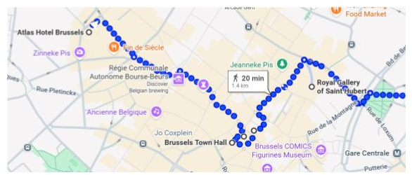
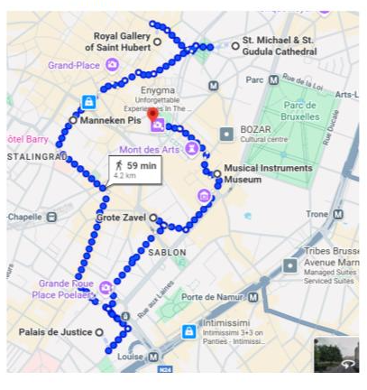

Hotel:
Atlas Hotel Brussels
Rue Du Vieux Marché Aux Grains 30

- La Grand Place: una de las plazas más lindas del mundo.
- Ayuntamiento de Bruselas: el edificio más espectacular de la plaza.
- Brussels City Museum.
-
Galería Saint Hubert:
fue la primera galería comercial de Europa.
-
Catedral de San Miguel y Santa Gúdula:
edificio de estilo gótico del siglo XIV,
decorado con impresionantes vitrales y esculturas.

-
Manneken Pis:
estatua de un niño desnudo orinando en una fuente,
uno de los símbolos más famosos de la ciudad.
-
Palacio de Justicia de Bruselas:
una visita muy recomendada.
-
Place du Grand Sablon:
llena de cafeterías y chocolaterías,
junto a la Iglesia Notre Dame du Sablon.
-
Camino recomendado:
bajar desde el Palacio Real hasta el centro histórico
comenzando en la Plaza Real.
Son unos 500 m pasando por edificios impresionantes como:
- Old England (hoy Museo de Instrumentos Musicales)
- Museo Magritte
- Biblioteca Real
- Galería Ravenstein
- Jardines de Mont des Arts (vistas increíbles)
-
Librería Genicot:
una joya del Art Nouveau y uno de los secretos mejor guardados de Bruselas.